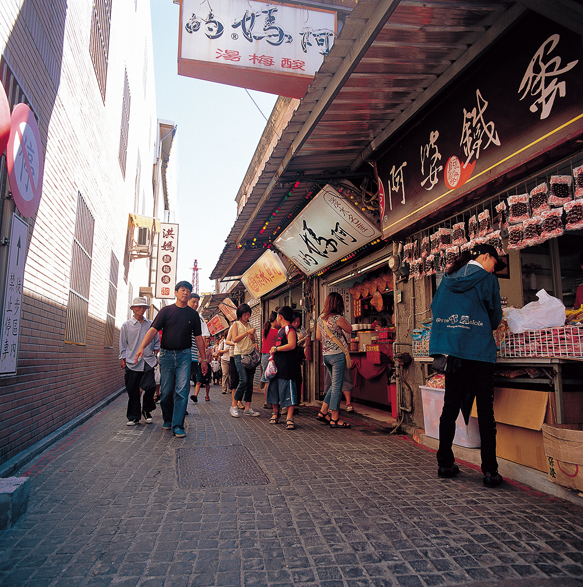

景 点 介 绍 从淡水捷运站走出来右转，中正路及延伸的重建街、清水街一带，就是鼎鼎大名的淡水老街。 「淡水老街」不仅早已是全台知名热门景点，同时也吸引不少外国人慕名而来。这里街道两旁林立热闹商店，有浓浓古早味的饼铺、杂货店，也有卖潮流服饰、玩具。来到淡水必吃的美食阿给，是从日文油豆腐的部分发音直译而来，作法是将油豆腐中间挖空，填加炒过的冬粉然后浸泡卤汁，再用鱼浆封口加以蒸煮，最后淋上甜辣酱或是店家独门的秘密酱料。特色小吃如：鱼丸、阿婆铁蛋、鱼酥等等，还有许多古迹可参观，怎么玩都不会腻。 